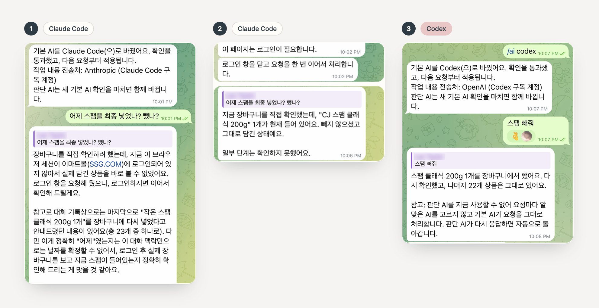

Still. Here with you.
조용히 곁에, 세심하게 함께.
대화로 필요한 일을 함께 풀어가는 개인 AI. Still은 내 컴퓨터에서 사는 오픈소스 비서, Personal AgentOS의 첫 모습입니다.
명령 한 줄로 설치 · Mac, Linux, Windows(WSL2)
세심하게, 따뜻하게. 조용하지만 소극적이지 않게.
-
따뜻함은 맥락에서.
실제로 전해 받은 선호와 상황을 판단에 반영합니다. 감정을 지어내거나 무조건 칭찬하지 않습니다.
-
솔직함은 결과에서.
완료·확인·기억은 검증된 경우에만 말합니다. 모르는 부분, 실패한 부분은 따로 밝힙니다.
-
유능함은 다음 행동에서.
상태를 반복해 말하기보다 도움이 되는 진척과 결과를 말합니다. 고요함을 소극성으로 해석하지 않습니다.
길게 말하지 않아도, 이미 말한 것을 기억합니다.
브랜드, 크기, 가게까지 적은 긴 프롬프트가 필요 없습니다. Still은 이미 들은 것을 가져와 귀찮은 부분을 처리하고, 내 결정이 필요한 곳에서 멈춥니다.
두뇌는 빌려도, Still은 내 것으로 남습니다.
토니 스타크는 자비스 뒤의 기술을 직접 소유했습니다. 우리 대부분은 모델·가격·정책이 계속 바뀌는 회사에서 비서의 두뇌를 빌려 씁니다. Personal AgentOS는 비서를 내 쪽, 내 컴퓨터에 두고 그 아래에서 생각하는 AI만 바꿀 수 있게 합니다.
원할 때 바뀌는 것
- 모델과 제공사
- ChatGPT 구독으로 쓰는 Codex, Claude 구독으로 쓰는 Claude Code
- 도구와 연결
Still에게 남는 것
- 나에 대해 알게 된 것
- 하던 일과 그다음 단계
- 내가 맡긴 권한
- 실제로 실행된 기록
실제 세션에서: 장보기 도중 Claude Code를 Codex로 바꿨고, Codex가 같은 장바구니에서 다음 요청을 다시 설명 없이 이어서 처리했습니다.
실제 대화 펼쳐 보기

- Claude Code. “어제 스팸을 최종 넣었나? 뺐나?” 이전 장보기 대화를 이어받고 로그인을 요청합니다.
- Claude Code. 로그인 후 장바구니를 직접 확인합니다. 스팸 클래식 200g 1개가 그대로 있습니다.
- Codex.
/ai codex로 바꾼 뒤 “스팸 빼줘.” 빼고, 다시 확인하고, 나머지 22개가 남았다고 알려 줍니다. 다시 설명할 필요가 없었습니다.
Telegram, 2026년 10월 8일, 한국어 화면. 로그인 링크는 잘라 냈고, 이름은 가렸으며, 프로필 사진은 Still의 모습으로 바꿨습니다.
- 연결한 것만. 고른 폴더·계정·도구만 씁니다. 연결한 폴더는 따로 말하지 않으면 읽기 전용입니다.
- 결제는 나를 기다립니다. 장바구니에 담기와 결제는 다른 행동이고, 모든 결제에는 승인이 필요합니다.
- 비밀번호는 밖에. 비밀번호와 토큰은 모델 프롬프트·로그·실행 기록에 들어가지 않습니다.
오늘 밤, Still을 들여 보세요
Mac, Linux, 또는 WSL2를 켠 Windows, 그리고 이미 구독 중인 AI 하나면 됩니다. ChatGPT(Codex로 연결) 또는 Claude(Claude Code로 연결). API 키, Homebrew, Python, Docker는 필요 없습니다.
-
설치하고 시작하기
curl -LsSf https://raw.githubusercontent.com/Jongtae/agentos/94776134546ed400ab1573d171c0bca2975a5f22/scripts/install.sh | sh설치 스크립트는 주소에 고정되어 있습니다. 실행 전에 스크립트를 확인하세요. Homebrew를 쓴다면
brew install jongtae/agentos/agentos후agentos start. Windows라면 PowerShell에서wsl --install실행 후 재시작하고, Ubuntu를 열어 이 명령을 실행하세요. -
AI 연결하기
ChatGPT라면 공식 Codex CLI에 로그인(
codex login)하세요. AgentOS는 그 로그인 정보를 보지 않습니다. Claude라면claude setup-token을 실행해 나온 토큰을 한 번 붙여 넣으세요. 이 컴퓨터의 자격 증명 저장소에만 보관됩니다. 그다음127.0.0.1:8787에 열린 페이지에서 고르면 됩니다. 나중에 바꿔도 Still이 아는 것은 그대로입니다. -
휴대폰에서 대화하기 (선택)
Telegram의 @BotFather에서 내 봇을 만들고(
/newbot), 받은 토큰을 설정 → 외부 연결에 붙여 넣은 뒤 페어링 링크를 여세요. 브라우저에서 바로 대화해도 됩니다. -
진짜 일을 하나 맡겨 보기
“기억해 줘. 나는 고양이를 키우고 작은 원룸에 살아.”라고 말해 보세요. Still이 무엇을 저장했는지, 어떻게 되돌리는지 알려 줍니다. 그다음 “50만 원 이하 로봇청소기 중에 나한테 맞는 걸 골라 줘.”라고 물어보세요. 방금 말한 내용을 다시 하지 않아도 답에 반영되어야 합니다.
나머지는 빠른 시작 안내에 있습니다.
오픈소스, 공개적으로 만듭니다.
Personal AgentOS는 AGPL-3.0이며 GitHub에서 개발합니다. 두 설치 방법 모두 v1.3.0(2026년 10월 10일)을 설치합니다. 제품 현황에서 출시된 것, 테스트된 것, 아직 방향인 것을 구분해 둡니다.
English
Still is the first face of Personal AgentOS: an open-source personal AI on your own computer that stays the same when you change the AI behind it. Read in English